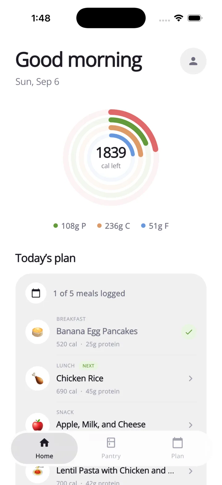
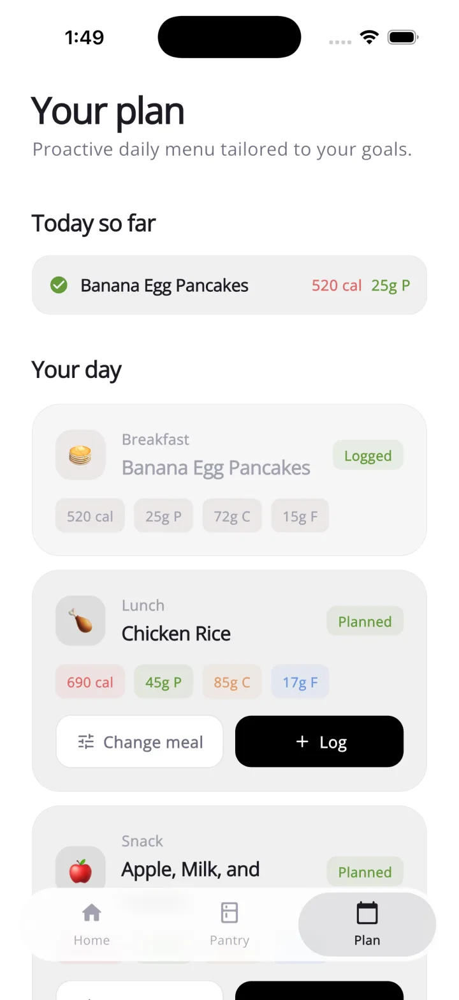
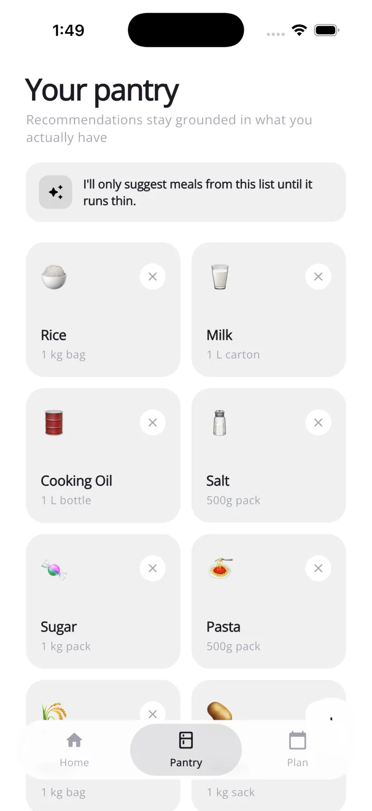
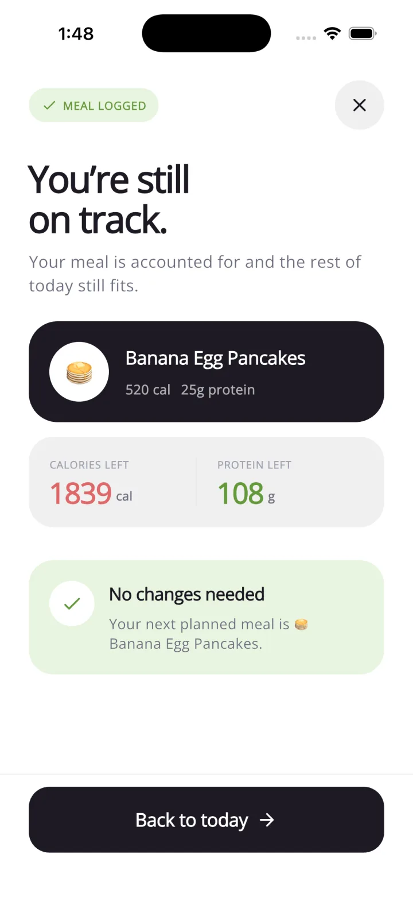

LOGGED LUNCHChicken power bowl
610 cal
Nutrition, planned around real life
Your day,
handled.
NextMeal turns your goals and the food you already have into a flexible daily plan. Log what happened. We’ll make the rest fit.
No rigid meal plans
Pantry-aware
Macro-smart

Today
1,839cal left
✓
On trackPlan adjusted
Tracking tells you what happened.
NextMeal helps decide
what happens next.
A plan that moves with you
Plans change.
Your targets don’t have to.
Had an unplanned lunch? Log it in seconds. NextMeal recalculates what’s left and reshapes the rest of your day around your goals.
YOUR AFTERNOON
REBALANCED
Calories left1,149
Protein left63g
NextMeal adapts
NEW DINNERLentil pasta & chicken
700 cal
Everything after lunch now fits your remaining calories and protein.
01
See the whole day,
See the whole day,
not another food diary.
Calories, protein, carbs, and fats stay clear at a glance — alongside the meals that get you there.
02
Log it.
Log it.
Keep moving.
Capture what you ate and instantly understand how the rest of today still fits.
✓
MEAL LOGGEDYou’re still on track.


Your kitchen, understood
Meals built from
what you have.
Tell NextMeal what’s in your pantry. Recommendations stay grounded in your real kitchen, so you buy less, waste less, and still hit your macros.
- ✓Use what you havePractical meals from familiar ingredients.
- ✓Swap without the mathAlternatives still respect today’s targets.
- ✓Stay flexibleNothing is locked in. Your plan is yours.
Less tracking. More living.
One meal doesn’t
ruin the day.
NextMeal accounts for what you ate, shows exactly what remains, and keeps your next best move simple.
1839calories left
108gprotein left

Meet your next meal
Eat with a plan.
Live without one.
A modern nutrition coach that adapts to your goals, your kitchen, and your day.
Get early access